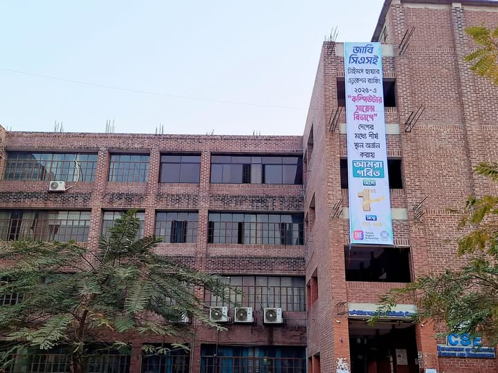
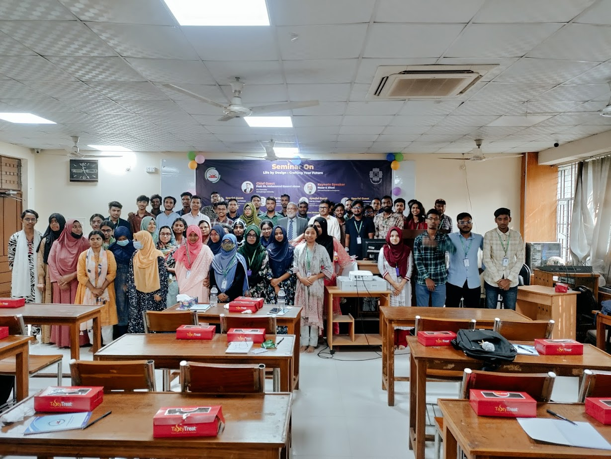
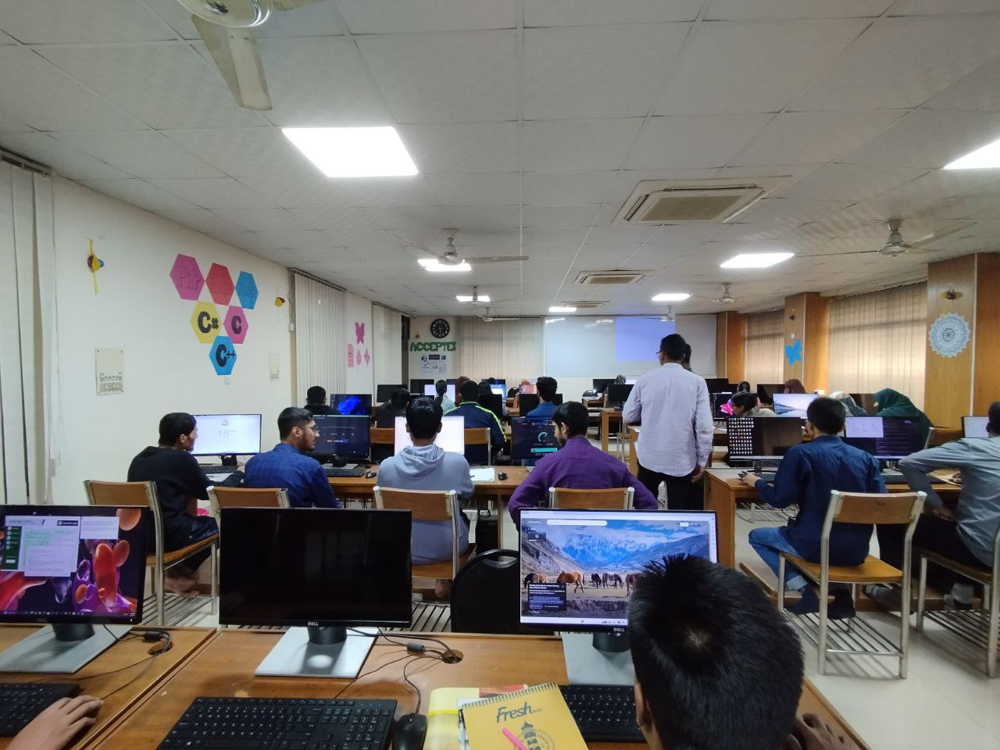
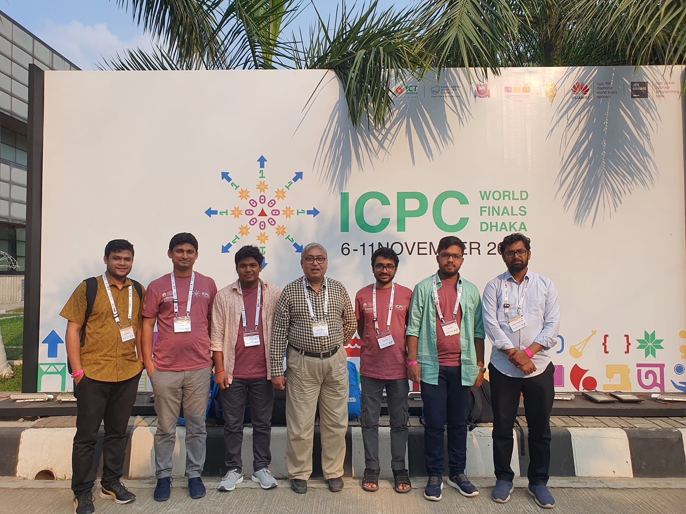
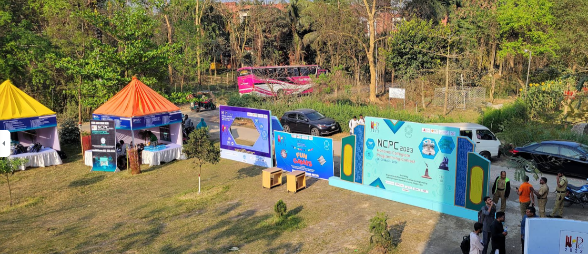
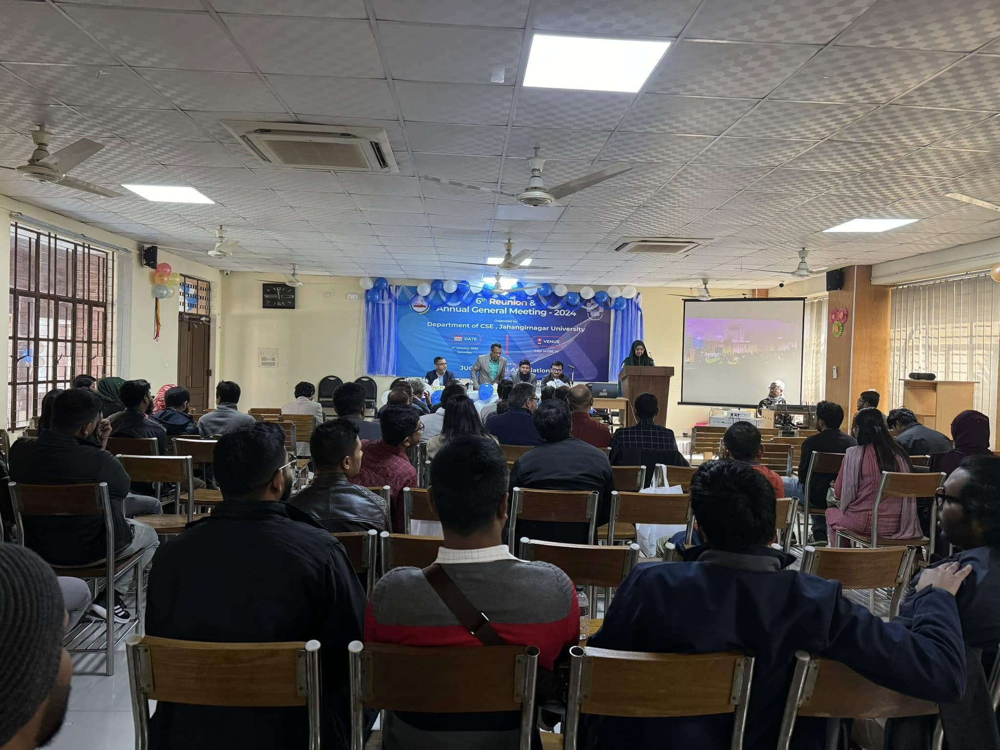

ইতিহাস:
বাংলাদেশে সর্বপ্রথম বুয়েটে সিএসই ডিপার্টমেন্ট খোলার পর জাহাঙ্গীরনগরে সিএসই ডিপার্টমেন্ট খোলা হয় ১৯৯১ সালে। ইতিহাসের দিক বিবেচনায় এটি বাংলাদেশের ২য় সিএসই ডিপার্টমেন্ট । বর্তমানে ৩৩ তম ব্যাচের ১ম বর্ষের স্নাতক চলমান রয়েছে।


ইনফ্রাস্ট্রাকচার:
আমাদের জাবি সিএসই ডিপার্টমেন্টের নিজস্ব একটি বিল্ডিং আছে। যেখানে আমাদের ৩টি ক্লাস রুম, ১টি মাল্টিপারপাস রুম, ৩টি ল্যাব রুম, ১টি লাইব্রেরী আছে। প্রতিটি ক্লাসরুমে পর্যাপ্ত এসি সম্বলিত এবং প্রত্যেক শিক্ষার্থীর বসার জন্যে পর্যাপ্ত পরিমাণ মানসম্মত চেয়ার টেবিল আছে। বর্তমানে ডিপার্টমেন্টে স্নাতক ৪৯-৫৩ ব্যাচ পর্যন্ত চলমান আছে। স্নাতকোত্তর ৪৮ তম ব্যাচের ক্লাস চলমান আছে। ক্লাস রুমের কখনো কোনো সংকট হয়নি। ক্লাস ঠিকঠাক মতো হয়। জাবিতে ক্লাস একটু দেরিতে শুরু হয় যার কারণে স্নাতক শেষ হতে সময় বেশি লাগে। তাছাড়া ওভারল সেশন জট এর তেমন কোনো সমস্যা নাই। আর বর্তমানে ২৪ এর অভ্যুত্থানের পর সেমিস্টার শুরুর আগেই সব ক্লাস পরীক্ষার রুটিন দিয়ে দেওয়া হয়। পরীক্ষা তাই সময়মতো হয়ে যায়।Read More...
টিচার:
ডিপার্টমেন্টে স্টুডেন্ট টিচার রেশিও হিসেবে যথেষ্ট টিচার আছে। বেশিরভাগই টিচার পিএইচডি হোল্ডার যার কারণে যারা থিসিসে আগ্রহী তারা যেকোনো টিচারের আন্ডারে থিসিস ইজিলি করতে পারে। পড়ানোর কোয়ালিটির কথা যদি বলি কিছু কিছু টিচার আছেন যথেষ্ট ভালো পড়ান আবার কিছু কিছু টিচার এতটা গুরুত্ব দিয়ে পড়ান না। আসলে ভার্সিটি লাইফে টিচারদের পড়ানোর উপর কোন কিছু নির্ভর করে না ।এটা অনেকটা ওপেন ফিল্ড। নিজে নিজেই পড়তে হয় আর এটা শুধু জাহাঙ্গীরনগর না সব বিশ্ববিদ্যালয়ে একই সিনারিও।
কোডিং:
আমাদের ডিপার্টমেন্টে কোডিং এর অনেক পুরনো কালচার আছে ।আমাদের যারা ফার্স্ট ইয়ারে থাকে তাদের সিনিয়ররা কোডিং রিলেটেড বিভিন্ন সেশন নেয় এবং প্রায় সময় বিভিন্ন কনটেস্টের এরেঞ্জ করে। ডিপার্টমেন্ট থেকে অনেক সিনিয়ররা গুগল মাইক্রোসফট সহ অনেক বড় বড় মাল্টিন্যাশনাল এবং দেশীয় বড় বড় আইটি সেক্টরে বর্তমানে কর্মরত আছেন। তাই যাদের দেশি-বিদেশি বিভিন্ন বড় বড় সফটওয়্যার কোম্পানিতে জব করার ইচ্ছা তারা এখানে যথেষ্ট রিসোর্স ও গাইডলাইন পাবে সিনিয়র থেকে। আগে আমাদের জাহাঙ্গীরনগর বিশ্ববিদ্যালয় এন সি পি সি ও আইসিপিসি সহ বিভিন্ন কম্পিটিটিভ প্রোগ্রামিং প্রতিযোগিতায় যথেষ্ট ভালো অর্জন করেছে। বর্তমানে অবস্থান একটু পিছিয়ে গেলেও ওভারঅল এখনো কোডিং কালচার যথেষ্ট ভালো আছে। আমাদের ক্লাস শেষে মাঝরাত পর্যন্ত কোডিং করার জন্যে ডেডিকেটেড সিপি ল্যাব আছে।



রেজাল্ট:
সিএসই তে মেইনলি দুইটা দিক আছে ।হয় হাই সিজি নিয়ে ফায়ার এডুকেশনে যাওয়া। অথবা স্কিল ডেভেলপমেন্ট করে বড় বড় আইটি কোম্পানিতে জব করা। বেশিরভাগ ক্ষেত্রে অন্যান্য বিশ্ববিদ্যালয় দেখা যায় যেকোনো একটা দিকে সবাই ফোকাস করে। স্কিল ডেভেলপমেন্ট করতে গেলে রেজাল্ট ভালো তোলা টাফ হয়ে যায়। অথবা রেজাল্ট ধরে রাখতে গেলে স্কিল ডেভেলপমেন্ট ভালোমতো করা হয় না। আমাদের ডিপার্টমেন্টে রেজাল্ট ভালো করা তুলনামূলক সহজ যার কারণে অনেকে খুব ভালোভাবে সিজি এবং স্কিল ডেভেলপমেন্ট মেইনটেইন করতে পারে। যার কারণে একজন স্টুডেন্ট এর কাছে গ্রেজুয়েশনের পর সব চয়েজ খোলা থাকে।হায়ার এজুকেশন:
আমাদের ডিপার্টমেন্টে স্কলারশিপ নিয়ে বিদেশে যাওয়ার হার যথেষ্ট ভালো। আমাদের ডিপার্টমেন্টে রেজাল্ট তোলা ইজি হওয়ার কারণে থিসিস একটু ভালোমতো করলেই বাইরে যাওয়া যায়। তাই কেউ যদি হায়ারএজুকেশনের জন্য বাইরে যেতে চায় তার জন্য জাবি যথেষ্ট ভালো চয়েজ।অ্যাল্যামনাই:
জাহাঙ্গীরনগর বিশ্ববিদ্যালয়ের সিএসই ডিপার্টমেন্টের অ্যালামনি যথেষ্ট ভালো এবং এক্টিভ। আমাদের ভাই আপুরা দেশ বিদেশে মোটামুটি সব জায়গায় আছেন। একাডেমিক জব মোটামুটি সব জায়গায় ভাই আপুরা যথেষ্ট আন্তরিক। যেকোনো প্রয়োজনে তারা ছোটো ভাই বোনদের পাশে থাকেন।

অসুবিধা:
এখানে হায়ার এজুকেশন এবং সিপি নিয়ে অনেক সেশন হলেও অন্যান্য স্কিল যেমন হ্যাকাথন, সাইবার সিকিউরিটি, ওয়েভ ডেভেলপমেন্ট,অ্যাপ ডেভেলপমেন্ট সহ অন্যান্য বিষয় নিয়ে তেমন কোনো সেশন হয় না। তাছাড়া আমাদের রোবোটিক্স ক্লাব ছাড়া সিএসই ডেডিকেটেড কোনো ক্লাব নাই। শুধু সিপি কমিউনিটি আছে।
সুবিধা - অসুবিধা মিলিয়েই জাবি সিএসই। তাও জাবি সিএসই সব মিলিয়ে
সিএসই পড়ার জন্যে যথেষ্ট ভালো চয়েজ। আর টিচার রা কোডিং এবং থিসিস
নিয়ে যথেষ্ট হেল্পফুল। আবার অপর দিকে জাবি ক্যাম্পাস হিসেবে সেরা।
চার বছর যথেষ্ট সুন্দর কাটবে বলে মনে করি। পরিশেষে জুনিয়রদের কে
বলতে চাই
🔥ওয়েলকাম টু জাবি সিএসই🔥
🔥ওয়েলকাম টু জাবি সিএসই🔥